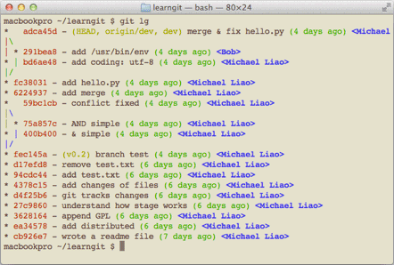

有没有经常敲错命令？比如
git status
？
status
这个单词真心不好记。
如果敲
git st
就表示
git status
那就简单多了，当然这种偷懒的办法我们是极力赞成的。
我们只需要敲一行命令，告诉 Git，以后
st
就表示
status
：
$ git config --global alias.st status
好了，现在敲
git st
看看效果。
当然还有别的命令可以简写，很多人都用
co
表示
checkout
，
ci
表示
commit
，
br
表示
branch
：
$ git config --global alias.co checkout
$ git config --global alias.ci commit
$ git config --global alias.br branch
以后提交就可以简写成：
$ git ci -m "bala bala bala..."
--global
参数是全局参数，也就是这些命令在这台电脑的所有 Git 仓库下都有用。
在
撤销修改
一节中，我们知道，命令
git reset HEAD file
可以把暂存区的修改撤销掉（unstage），重新放回工作区。既然是一个 unstage 操作，就可以配置一个
unstage
别名：
$ git config --global alias.unstage 'reset HEAD'当你敲入命令：
$ git unstage test.py实际上 Git 执行的是：
$ git reset HEAD test.py
配置一个
git last
，让其显示最后一次提交信息：
$ git config --global alias.last 'log -1'
这样，用
git last
就能显示最近一次的提交：
$ git last
commit adca45d317e6d8a4b23f9811c3d7b7f0f180bfe2
Merge: bd6ae48 291bea8
Author: Michael Liao <askxuefeng@gmail.com>
Date: Thu Aug 22 22:49:22 2013 +0800
merge & fix hello.py
甚至还有人丧心病狂地把
lg
配置成了：
git config --global alias.lg "log --color --graph --pretty=format:'%Cred%h%Creset -%C(yellow)%d%Creset %s %Cgreen(%cr) %C(bold blue)<%an>%Creset' --abbrev-commit"
来看看
git lg
的效果：

为什么不早点告诉我？别激动，咱不是为了多记几个英文单词嘛！
配置 Git 的时候，加上
--global
是针对当前用户起作用的，如果不加，那只针对当前的仓库起作用。
配置文件放哪了？每个仓库的Git配置文件都放在
.git/config
文件中：
$ cat .git/config
[core]
repositoryformatversion = 0
filemode = true
bare = false
logallrefupdates = true
ignorecase = true
precomposeunicode = true
[remote "origin"]
url = git@github.com:michaelliao/learngit.git
fetch = +refs/heads/*:refs/remotes/origin/*
[branch "master"]
remote = origin
merge = refs/heads/master
[alias]
last = log -1
别名就在
[alias]
后面，要删除别名，直接把对应的行删掉即可。
而当前用户的 Git 配置文件放在用户主目录下的一个隐藏文件
.gitconfig
中：
$ cat .gitconfig
[alias]
co = checkout
ci = commit
br = branch
st = status
[user]
name = Your Name
email = your@email.com
配置别名也可以直接修改这个文件，如果改错了，可以删掉文件重新通过命令配置。
给 Git 配置好别名，就可以输入命令时偷个懒。我们鼓励偷懒。